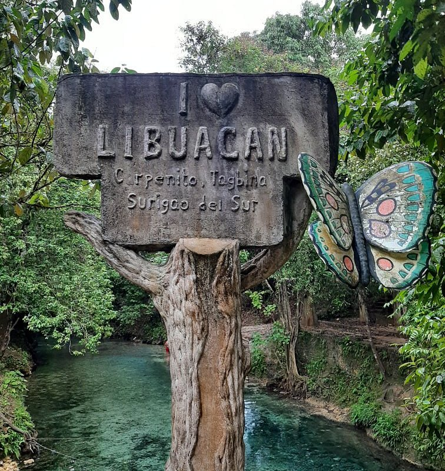
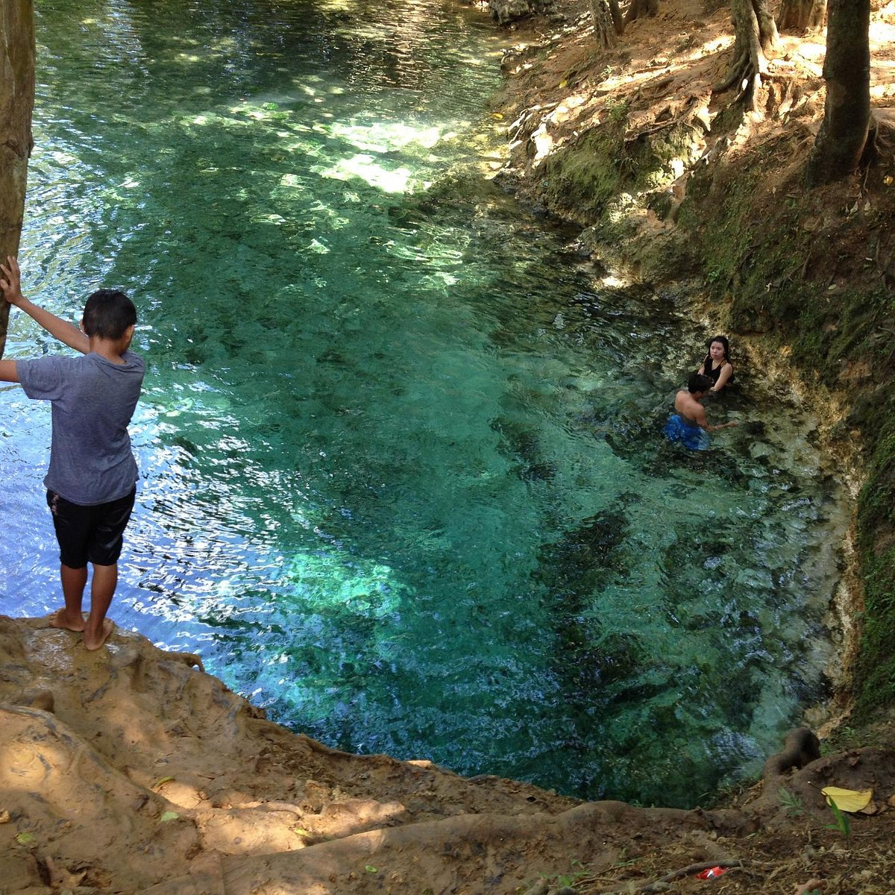
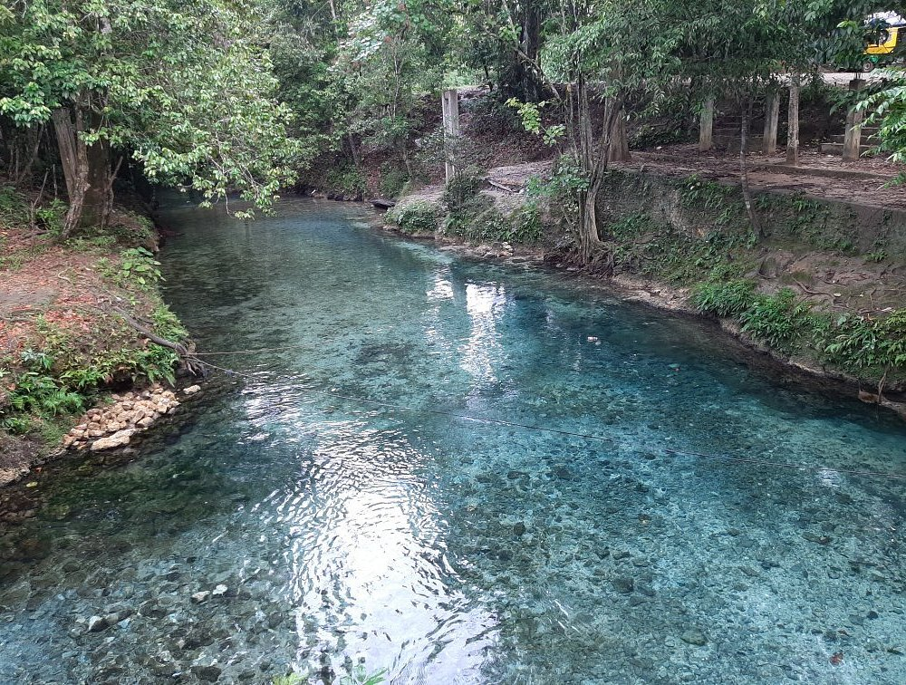
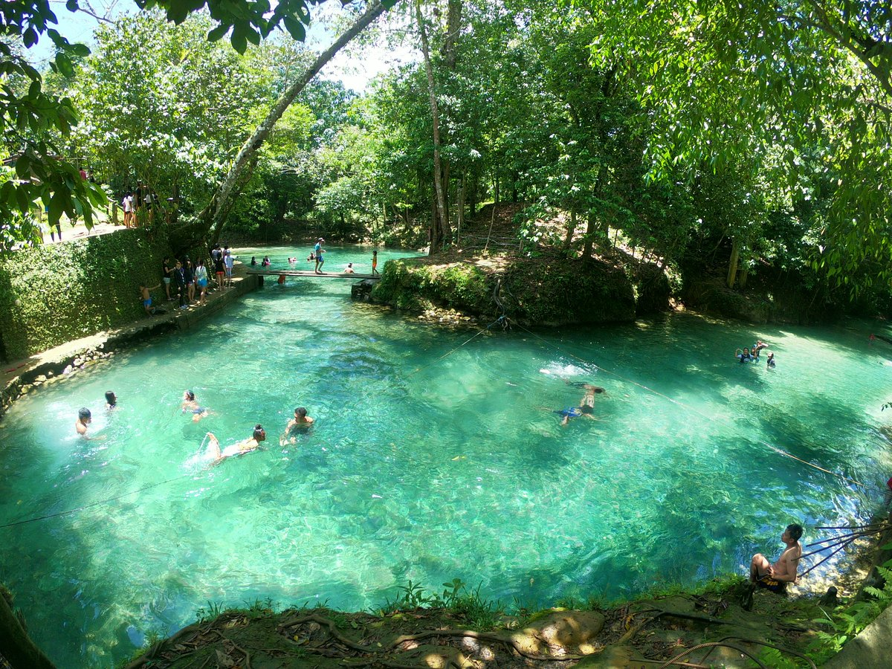

Libuacan Cold Spring is a natural spring pool located in Barangay Maglambing, Tagbina, near Hinatuan, Surigao del Sur, Philippines. It is known for its strikingly clear, turquoise water fed by an underground cave system and shaded by dense riverside forest. The spot is popular as a quiet, low-key alternative to the more famous Enchanted River.
The spring maintains a consistently cool temperature, making it perfect for swimming in a tropical climate. The surrounding trees provide shade and enhance the relaxing ambiance. The area is simple yet inviting, offering a sense of escape from urban life. Visitors often describe it as a hidden gem due to its quiet setting. The combination of natural beauty and tranquility makes it a unique destination. Overall, Libuacan Cold Spring is ideal for relaxation.


The spring forms a natural pool with glass-clear water that appears shallow but quickly becomes deep near the source. Locals describe it as a “mini Enchanted River” thanks to its blue-green hues and visibility of the rocky bottom. The surrounding area is wooded, providing shade and a secluded, tranquil feel, with some banks used for jumping into the deeper parts.
Simple developments include concrete steps down to the water, a narrow wooden footbridge, picnic tables and benches, and a modest dressing or changing shed. There is typically no fixed entrance fee; instead, the barangay often accepts voluntary donations at a small hut near the entrance, and occasional small stores sell snacks nearby.


Tourists visiting Libuacan Cold Spring can enjoy simple yet fulfilling activities. Swimming in the cool water is the most popular activity. Relaxing under the shade of trees provides a peaceful experience. Picnicking is common among families and groups. Photography is also enjoyed due to the natural scenery.
Visitors often spend time resting and enjoying the quiet environment. The calm setting makes it ideal for stress relief. Some tourists explore nearby areas to extend their visit. The simplicity of the activities adds to the charm of the place. The experience focuses on relaxation rather than adventure. Overall, it offers a refreshing escape.
Visitors usually reach Libuacan via buses traveling the Surigao del Sur coastal road (e.g., from Butuan City, Davao City, or Mangagoy/Bislig), then alight near Maglambing Elementary School and take a short habal-habal ride to the spring. It is often combined in itineraries with Hinatuan’s Enchanted River, Tinuy-an Falls, and the Britania Islands.